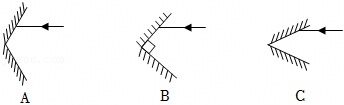
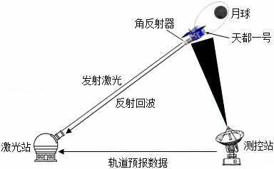

2025年北京市中考物理试卷 · 科普阅读 第24题
24．（4分）请阅读《地月空间的精准量尺——激光测距》并回答问题。
地月空间的精准量尺一一激光测距
2025年4月，在浩瀚宇宙中的地月空间，一场跨越35万公里的“光影对话”悄然上演，天都一号通导技术试验星，成功完成全球首次白天强光干扰条件下的地月空间激光测距技术试验，标志着我国在深空轨道精密测量领域取得技术新突破。
地月空间是指从地球低轨道延伸至距地球约200万公里的空间范围，是人类探索的一个重要方向，作为人类基于现有科技水平可望而又可即的空间，是我们理解宇宙、试验新技术、驶向星辰大海的“演习场”。
如图所示为激光测距试验示意图，天都一号搭载角反射器在绕月轨道上运动，地面测控站提供轨道预报数据，地面激光站发出激光，激光经距地约3.5×108m的角反射器反射后“原路”返回，激光站接收到反射回波信号，就可以得到此时天都一号到地面的精准距离。由于地月空间距离极大、天都一号卫星在绕月轨道上运动速度极快，对地月空间卫星进行激光测距相当于万米外瞄准一根头发丝，实施精密跟踪与信号捕获难度极大，此次测距验证了我国深空激光测距技术的成熟度。
地月空间激光测距技术试验的成功，为中国开发利用地月空间奠定了坚实的科技基础，也为未来深空探测任务提供了重要手段，将有力支撑国际月球科研站等后续重大工程任务的论证与实施。
请根据上述材料，回答下列问题：
（1）天都一号通导技术试验星成功完成全球首次 的地月空间激光测距技术试验。
（2）在激光测距试验中，从激光站发出激光，经天都一号上的角反射器反射，到激光站接收到回波信号所用时间约为 s。（光速取3.0×108m/s，结果保留一位小数）
（3）如图所示，两块平面镜成一定夹角构成角反射器，一束光线射向角反射器，经两次反射就能模拟天都一号上的角反射器效果的是 。

（4）文中介绍的角反射器、激光测距等技术，都是物理知识的具体应用，科学家不断将科学知识应用于技术创新，推动了人类社会的进步。请仿照表中示例，再举出一个物理知识应用于技术方面的实例，补全表格中①②的内容。
物理知识 | 物理知识的技术应用实例 |
光的反射定律 | 角反射器 |
① | ② |
